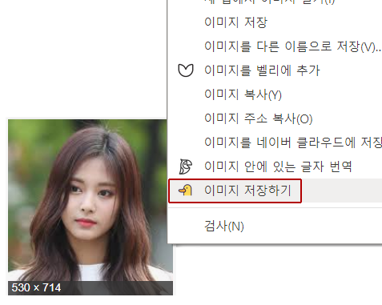

인물 여러명 인식시 알림
최근 다운로드한 이미지
다운로드 날짜 :
파일명 :
경로 :
다운로드 내역
| 날짜 | 파일명 | 경로 |
|---|
사용방법
- 웨일 스토어에서 어덕편덕을 다운로드 받으면 사이드바에 덕덕이 아이콘이 나타납니다.

- 사이드바 영역에서는 각종 설정, 최근에 다운로드 받은 이미지의 정보 및 이전 다운로드 내역을 확인할 수 있습니다. (단축키 Alt+A)

- 사이드바 영역의 왼쪽 상단에 있는 스위치로 서비스를 키고 끌 수 있습니다. (단축키 Alt+S)

- 웹에서 저장할 인물 이미지에 마우스 오른쪽을 클릭하고 이미지 저장하기를 클릭합니다.
 - 덕덕이가 열심히 이미지를 분석합니다!
소요 시간은 평균 5초 정도이나 이미지 크기와 네트워크 상태에 따라 조금씩 달라집니다.

- 팝업으로 분석 결과를 보여줍니다.
덕덕이가 분석한 인물 신뢰도가 60% 이상인 경우 사용자 컴퓨터의 Download-인물이름 경로로 바로 저장됩니다.

- 이미지를 분석한 결과 신뢰도가 60% 이하인 경우 사용자가 직접 파일 이름을 입력할 수 있습니다.


- 인물 여러명 인식시 알림이 켜져 있는 경우, 2명 이상 인식 되면 사용자가 직접 파일 이름을 입력할 수 있습니다.
(해제된 경우에는 신뢰도가 가장 높은 인물을 기준으로 저장합니다.)


- 기타 문의 사항이나 오류는 자주 묻는 질문을 참고해주세요.
자주 묻는 질문
- Q. 인물 분석 서비스가 작동하지 않아요.
- 먼저 서비스 서비스가 켜져있는지 확인하고, 꺼져 있는 경우 사이드바 영역 왼쪽 상단의 스위치를 켭니다. (단축키 Alt+S)
또는 이미지에서 마우스 오른쪽 클릭 후 기존의 '이미지 저장'이나 '다른 이름으로 저장'을 클릭하는 경우에는 서비스가 작동하지 않습니다. 대신, 이미지 저장하기를 클릭해주세요. - Q. 인물이 다른 이름으로 저장돼요.
- 어덕편덕은 네이버 Clova Face Recognition API로부터 분석 결과를 받아옵니다. 인물 이미지의 분석 결과는 이미지 저장시 팝업으로 확인하실 수 있습니다. 인물의 검색 빈도가 다소 낮은 경우 분석 결과가 정확하지 않을 수 있습니다.
- Q. 계속 '서버와의 통신에 실패했습니다.' 창이 나타나요.
- 네트워크 상태가 불안정한 경우 인물 이미지 처리가 원할하지 않을 수 있습니다. 네트워크 상태를 확인해주세요. 네트워크 상태가 안정적이지만 해당 경고창이 지속적으로 나타난다면, 개발자 이메일로 문의주세요.
- Q. 제가 다운로드 받은 사진이 서버에 저장되나요?
- 인물 인식 처리를 위해 임시 파일로 서버에 저장되지만, 주기적으로 임시 파일을 삭제하고 있으며 그외의 기록은 남기지 않습니다.
- Q. 사진을 다른 위치에 저장하고 싶어요.
- 웨일 브라우저의 설정 - 다운로드와 캡처 - 위치에서 다운로드 위치를 변경할 수 있습니다. 설정 바로가기
- Q. 나무위키에 있는 사진이 저장 안되요.
- 안타깝게도 어덕편덕은 버그로 인해 나무위키 지원 안됩니다(_._) 더 많은 사이트의 이미지를 편리하게 다운받을 수 있도록 더욱 더 노력할게요.